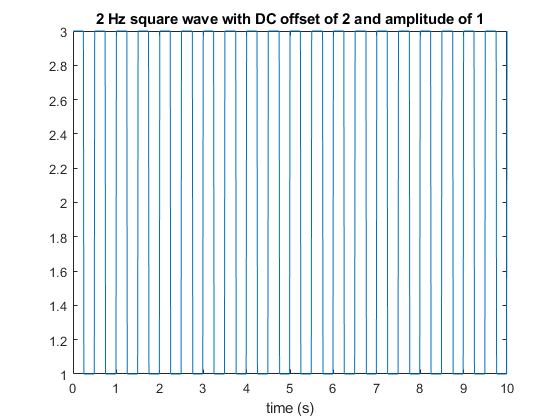
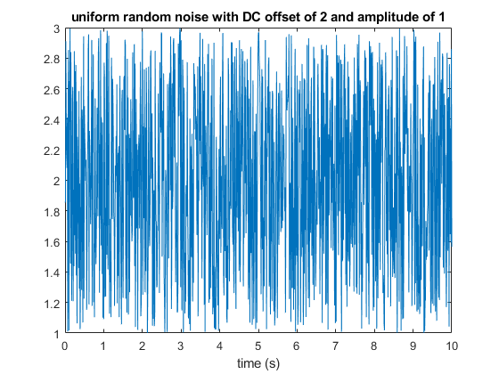
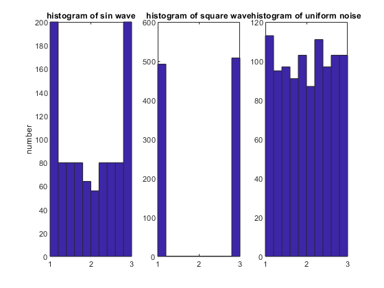
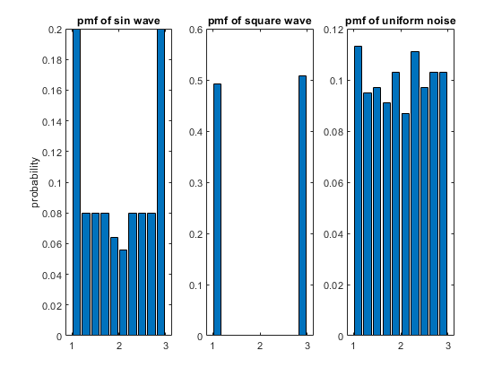
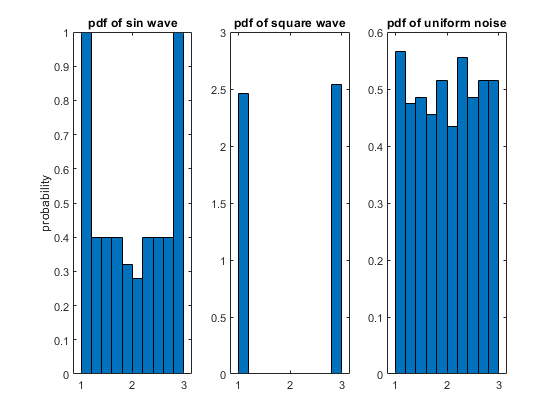

Contents
- 1: Produce and plot a 1000 sample 2 Hz sine wave. Use peak-to-peak amplitude of 2 and DC offset of +2 and sampling of 100 Hz.
- 2: Numerically calculate the standard deviation of this time series. Do this without using the built-in MATLAB function std. Provide the syntax (MATLAB equation) for your standard deviation calculation. Verify that your result is the same as produced by std.
- 3: repeat parts 1 and 2 for a square wave of same frequency amplitude, and offset. Use function square.
- 4: plot uniform random noise (use rand) for the range [1,3] and then calculate its standard deviation.
- 5: use hist to plot histograms for the three data series. For each histogram use 10 bins in the interval from 1 to 3. I Suggest use of linspace command for bin construction. You will want to be %clever’ about constructing the bin center values.
- 6: replot the histograms from the previous figures as probability mass functions (i.e. sum of all bins total 100%).
- 7: replot the histograms from the previous figure as probability density functions (integration must total 1).
% GEOPH420/520 ASSIGNMENT01
1: Produce and plot a 1000 sample 2 Hz sine wave. Use peak-to-peak amplitude of 2 and DC offset of +2 and sampling of 100 Hz.
A = 1; % means peak-to-peak is 2 DC = 2; % DC offset sps = 100; % sample rate f = 2; % frequency cycles per second omega = f*2*pi; % frequency in radians per second N = 1000; t = (1:N)/sps; x1 = DC + A*sin(t*2*pi*f); figure(1); clf plot(t,x1) title('2 Hz sinusoid with DC offset of 2 and amplitude of 1') xlabel('time (s)')
2: Numerically calculate the standard deviation of this time series. Do this without using the built-in MATLAB function std. Provide the syntax (MATLAB equation) for your standard deviation calculation. Verify that your result is the same as produced by std.
mu1 = sum(x1)/N; sigma1 = sqrt((1/(N-1))*sum((x1-mu1).^2)) sigma1_builtin = std(x1)
3: repeat parts 1 and 2 for a square wave of same frequency amplitude, and offset. Use function square.
x3 = DC + A*square(t*2*pi*f); sigma3 = std(x3) figure(3); clf plot(t,x3) title('2 Hz square wave with DC offset of 2 and amplitude of 1') xlabel('time (s)')
sigma3 =
1.0004
 4: plot uniform random noise (use rand) for the range [1,3] and then calculate its standard deviation.
x4 = (rand(N,1)-.5)*2*A + DC; % note that rand.m random noise has a range of 0 to 1 so 0.5 is subtracted to center it around 0 figure(4); clf plot(t,x4) title('uniform random noise with DC offset of 2 and amplitude of 1') xlabel('time (s)')
5: use hist to plot histograms for the three data series. For each histogram use 10 bins in the interval from 1 to 3. I Suggest use of linspace command for bin construction. You will want to be %clever’ about constructing the bin center values.
bins = linspace(1.1,2.9,10) % bindwith is 0.2 with domain from 1 to 3 % alternatively (and equivalently bins = [1.1:.2:2.9] figure(5); clf subplot(1,3,1) hist(x1,bins) title('histogram of sin wave') ylabel('number') subplot(1,3,2) hist(x3,bins) title('histogram of square wave') subplot(1,3,3) hist(x4,bins) title('histogram of uniform noise')
bins =
Columns 1 through 7
1.1000 1.3000 1.5000 1.7000 1.9000 2.1000 2.3000
Columns 8 through 10
2.5000 2.7000 2.9000
bins =
Columns 1 through 7
1.1000 1.3000 1.5000 1.7000 1.9000 2.1000 2.3000
Columns 8 through 10
2.5000 2.7000 2.9000
 6: replot the histograms from the previous figures as probability mass functions (i.e. sum of all bins total 100%).
scale all output from histograms by the population size N; then check to see if all probabilities sum to a total of 1
figure(6); clf subplot(1,3,1) [n1] = hist(x1,bins); bar(bins,n1/N) title('pmf of sin wave') ylabel('probability') subplot(1,3,2) [n3] = hist(x3,bins); bar(bins,n3/N) title('pmf of square wave') subplot(1,3,3) [n4] = hist(x4,bins); bar(bins,n4/N) title('pmf of uniform noise')
7: replot the histograms from the previous figure as probability density functions (integration must total 1).
scale all output from histograms by the population size N and bin width (0.2), which equals 0.2; then check to see if all probabilities sum to a total of 1
bin_width = .2; % because there are ten bins in a domain of 2 figure(6); clf subplot(1,3,1) [n1] = hist(x1,bins); bar(bins,n1/N/bin_width,1) title('pdf of sin wave') ylabel('probability') subplot(1,3,2) [n3] = hist(x3,bins); bar(bins,n3/N/bin_width,1) title('pdf of square wave') subplot(1,3,3) [n4] = hist(x4,bins); bar(bins,n4/N/bin_width,1) title('pdf of uniform noise')